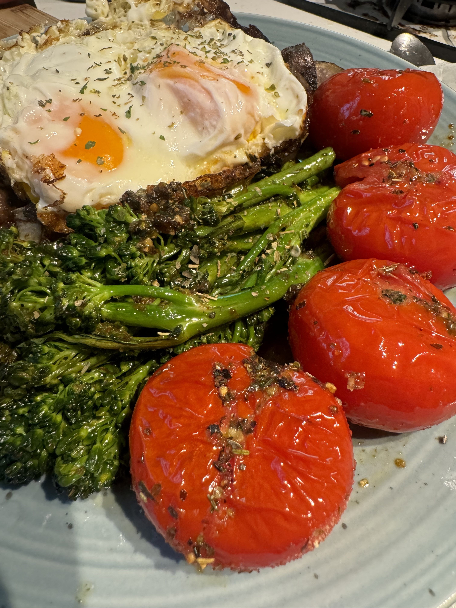

JPC's Broccolini

Description
A simple healthy side that works well alone or alongside an entree such as JPC's Potatoes or a side such as JPC's Tomatoes or both!
Ingredients
- broccolini
- fresh lemon juice
- chopped garlic
- herb/spices
Ingredients
- rinse and prep broccolini
- in a skillet over medium heat with olive oil add garlic
- as garlic browns add broccoline with herbs/spices
- allow to cook briefly and stir while adding lemon juice
- add more herbs/spices
- once properly cooked - serve
- enjoy!
Home